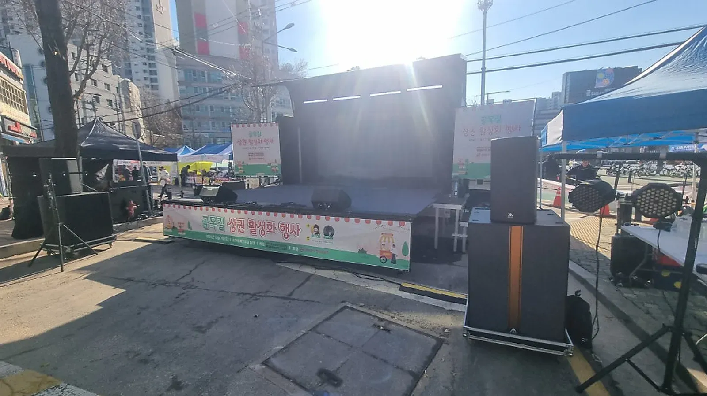
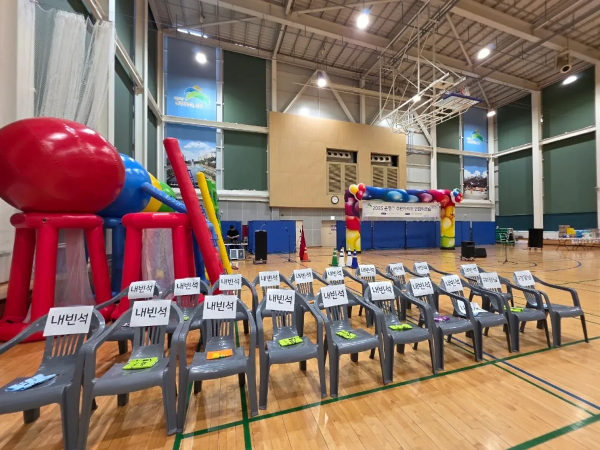

노원 행사 준비 · 2026년 10월 28일
노원 주민 축제 대행 — 동 축제 · 시장 축제 무대와 진행 준비
노원 주민 축제 대행을 맡기기 전에 담당자가 정할 것은 세 가지입니다. 누가 오는 축제인지, 무대에서 무엇을 보여 줄지, 사람이 어디로 다닐지. 이 셋이 정해지면 무대 크기 · 음향 · 진행 순서는 그에 맞춰 따라옵니다. 동 축제와 시장 축제를 준비하는 담당자가 상담 전에 살펴볼 내용을 정리했습니다.

- 주민 축제는 무대 공연보다 주민이 직접 참여하는 순서(퀴즈 · 게임 · 노래자랑)가 있을 때 자리를 오래 지킵니다.
- 무대 위치는 객석과 통행로, 상점 출입구를 함께 그려 보고 정합니다.
- 순간 최대 관람객이 1천 명 이상으로 예상되는 지역축제는 안전관리계획을 세워 개최일 3주 전까지 관할 구청에 제출해야 합니다.
- 견적은 날짜 · 장소 · 인원 · 진행 시간 · 프로그램 · 장비에 따라 달라지므로 자동 견적서에 항목을 골라 보내 주시면 됩니다.
1. 노원 주민 축제, 대행을 맡기기 전에 정할 것
힐링엔터테인먼트는 노원구 덕릉로 595 본사가 있는 곳이라 노원 행사는 가까이서 바로 찾아갑니다. 노원에서는 대표 MC 이현호가 상계1동 하나로 축제 총괄 감독을 맡았고, 상계 중앙시장 구정맞이 축제도 진행했습니다. 동네 축제든 시장 축제든 상담 첫날 아래 내용을 알려 주시면 구성안이 빨리 나옵니다.
| 정할 것 | 예시 | 영향을 주는 것 |
|---|---|---|
| 축제 목적 | 주민 화합 · 시장 홍보 · 명절 맞이 | 프로그램 구성 |
| 장소 | 동 주민센터 앞마당 · 시장 거리 · 공원 | 무대 크기 · 음향 · 전원 |
| 시간대 | 낮 · 저녁 · 야간 | 조명 필요 여부 |
| 예상 방문객 | 주민 위주 · 외부 방문 많음 | 안전 계획 · 객석 수 |
| 함께하는 단체 | 동아리 공연 · 상인회 부스 | 순서표 · 리허설 |
2. 무대 · 객석 · 통행로 — 한 장의 배치도로
거리나 앞마당에서 여는 축제는 무대를 어디에 두느냐에 따라 사람 흐름이 달라집니다. 무대 앞 객석이 통행로를 막으면 지나가는 주민이 불편하고, 상점 입구를 가리면 상인이 불편합니다. 상담 때 장소 사진이나 지도를 보내 주시면 배치도를 같이 그립니다.

- 무대: 뒤쪽에 건물이나 벽이 있으면 소리가 주거지 쪽으로 덜 퍼집니다.
- 객석: 의자는 통로를 남기고 줄을 맞춰 놓고, 어르신 자리는 무대 가까운 쪽에 둡니다.
- 부스: 체험 · 판매 부스는 무대 소리를 등지게 두면 대화가 편합니다.
- 운영석: 음향 운영석은 무대가 잘 보이는 객석 뒤쪽에 둡니다.
3. 주민 축제 순서표 — 참여 순서를 사이사이에
주민 축제는 공연만 이어지면 중간에 자리가 빕니다. 공연 사이에 MC가 진행하는 퀴즈 · 게임 · 경품 순서를 넣으면 주민이 직접 무대에 오르고, 그 가족과 이웃이 자리를 지킵니다. 억지 웃음이나 참가자를 깎아내리는 농담 없이 자연스럽게 참여를 끌어내는 것이 힐링엔터테인먼트의 진행 원칙입니다.
| 시간 | 순서 | 메모 |
|---|---|---|
| 시작 전 | 음향 점검 · 객석 안내 | 공연팀 리허설은 이 시간에 |
| 개막 | 인사 · 내빈 소개 | 내빈 명단은 전날까지 |
| 1부 | 동아리 · 초청 공연 | 공연팀 순서와 소요 시간 확인 |
| 중간 | 퀴즈 · 게임 · 경품 추첨 | 주민이 무대에 오르는 순서 |
| 2부 | 노래자랑 · 축하 공연 | 참가 신청은 미리 받기 |
| 마무리 | 대동놀이 · 폐막 인사 | 철수 동선 안내 |

4. 안전 계획 — 규모가 크면 제출 서류가 생깁니다
주민 축제라도 사람이 많이 모이면 법으로 정한 절차가 있습니다. 「재난 및 안전관리 기본법 시행령」에 따라 순간 최대 관람객이 1천 명 이상으로 예상되는 지역축제는 지역축제 안전관리계획을 세워 축제 개최일 3주 전까지 관할 시장 · 군수 · 구청장에게 제출해야 합니다. 공연장이 아닌 곳에서 1천 명 이상 관람이 예상되는 공연은 공연 개시 14일 전까지 재해대처계획을 신고해야 합니다.
제출 여부와 서식은 주최 측(구청 · 주민센터 · 상인회)이 관할 구청에 확인할 일입니다. 힐링엔터테인먼트는 무대 · 객석 배치와 진행 순서, 안전요원 위치를 계획서에 넣을 수 있게 정리해 드립니다.
- 안전요원 위치: 무대 앞 · 출입구 · 차량 통제 지점
- 비상 연락망과 소화기 위치
- 어르신 · 아이가 많은 시간대의 객석 간격
5. 견적 문의 항목
자동 견적서에서 아래 항목을 고르고 날짜 · 장소를 적어 보내 주시면 확인 후 견적을 안내드립니다. 금액은 행사마다 달라 견적서에 표시되지 않습니다.
| 항목 | 내용 |
|---|---|
| 지역축제 · 관공서 행사 | 기획 · 무대 진행 · 현장 운영 |
| 대표 MC 이현호 진행 | 축제 전체 진행 |
| 음향 (대형) | 거리 · 야외 무대 |
| 무대 | 크기 · 높이 협의 |
| 무대 조명 | 저녁 · 야간 축제 |
| 가수 섭외 | 행사 성격에 맞는 라인업 |
| 경품 · 시상 진행 | 추첨 · 시상 운영 |
거리 축제 현장 기록은 전농동 상권 활성화 축제 이야기에, 노원 지역 안내는 노원 행사 안내에 있습니다.
자주 묻는 질문
축제 공연팀도 함께 섭외하나요?
가수 섭외 · 댄스 · 공연팀은 자동 견적서 항목에 있습니다. 동네 동아리 공연이 있으면 그 순서와 시간을 먼저 알려 주시고, 빈 시간에 맞춰 초청 공연을 정합니다.
안전관리계획서는 대신 써 주나요?
제출은 주최 측이 관할 구청에 하는 일입니다. 다만 계획서에 들어갈 무대 · 객석 배치, 진행 순서, 안전요원 위치는 정리해 드립니다.
작은 동네 행사도 맡기나요?
네. MC 진행과 음향만 필요한 작은 행사도 상담합니다. 날짜 · 장소 · 예상 인원을 문자로 남겨 주세요.
행사 날짜가 정해지셨나요?
날짜 · 지역 · 인원 · 행사 종류만 알려 주시면 행사에 맞춰 상담 · 견적을 안내드립니다. 행사 중엔 통화가 어려우니 문자 · 카톡을 남겨 주세요.